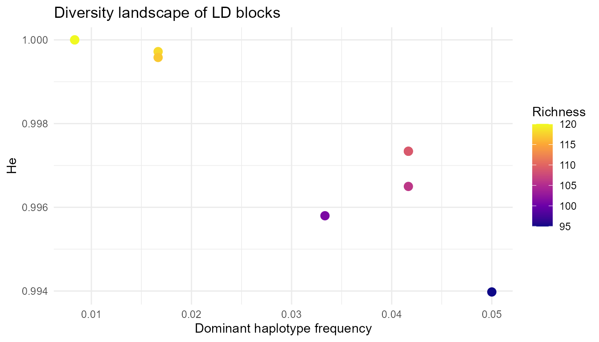

Overview
LDxBlocks detects linkage disequilibrium (LD) blocks
from genome-wide SNP data and extends the pipeline into haplotype
reconstruction, diversity analysis, and genomic prediction feature
engineering. Two LD metrics are available:
- Standard r² — fast, no kinship correction, suitable for 10 M+ markers and unstructured populations.
- Kinship-adjusted rV² — corrects for relatedness-induced LD inflation, for livestock, inbred lines, or family-based cohorts. See the LD Metrics vignette for the statistical detail and decision table.
The C++/Armadillo computational core makes the algorithm 10–50× faster than equivalent pure-R implementations.
This vignette covers the complete pipeline — reading genotype data,
block detection, haplotype analysis, and parameter tuning — using the
ldx_geno example dataset (120 individuals, 200 SNPs, 3
chromosomes, 9 simulated LD blocks).
Example data
Four datasets are shipped with the package, all generated by
data-raw/generate_example_data.R:
dim(ldx_geno) # 120 individuals x 200 SNPs
#> [1] 120 230
head(ldx_snp_info) # SNP, CHR, POS, REF, ALT
#> SNP CHR POS REF ALT
#> 1 rs1001 1 1000 G C
#> 2 rs1002 1 2134 C G
#> 3 rs1003 1 3089 T A
#> 4 rs1004 1 4067 A G
#> 5 rs1005 1 5246 G A
#> 6 rs1006 1 6312 C T
table(ldx_snp_info$CHR) # 70 on chr1, 70 on chr2, 60 on chr3
#>
#> 1 2 3
#> 80 80 70
nrow(ldx_gwas) # 20 toy GWAS markers
#> [1] 20Each chromosome has three LD blocks separated by ~50 kb inter-block gaps and short stretches of low-LD singleton SNPs.
Step 1 — Reading genotype data
read_geno() auto-detects the file format from the
extension and returns an LDxBlocks_backend object. Six
formats are supported:
| Format | Extension | format = |
|---|---|---|
| Numeric dosage |
.csv, .txt
|
"numeric" |
| HapMap | .hmp.txt |
"hapmap" |
| VCF / bgzipped VCF |
.vcf, .vcf.gz
|
"vcf" |
| SeqArray GDS | .gds |
"gds" |
| PLINK binary |
.bed (+ .bim, .fam) |
"bed" |
| R matrix | (in-memory) | "matrix" |
# From file — format auto-detected
be_vcf <- read_geno("mydata.vcf.gz")
be_csv <- read_geno("mydata.csv")
be_hmp <- read_geno("mydata.hmp.txt")
be_gds <- read_geno("mydata.gds") # SeqArray GDS; streams SNP windows
be_bed <- read_geno("mydata.bed") # PLINK BED; memory-mapped
# From an in-memory R matrix (existing workflow, unchanged)
be <- read_geno(ldx_geno, format = "matrix", snp_info = ldx_snp_info)
be
#> LDxBlocks backend
#> Type : matrix
#> Samples : 120
#> SNPs : 230
#> Chr : 1, 2, 3The backend has a uniform interface regardless of source format:
be$n_samples # 120
#> [1] 120
be$n_snps # 200
#> [1] 230
be$sample_ids[1:4]
#> [1] "ind001" "ind002" "ind003" "ind004"
head(be$snp_info)
#> SNP CHR POS REF ALT
#> 1 rs1001 1 1000 G C
#> 2 rs1002 1 2134 C G
#> 3 rs1003 1 3089 T A
#> 4 rs1004 1 4067 A G
#> 5 rs1005 1 5246 G A
#> 6 rs1006 1 6312 C T
# Extract a genotype slice
chunk <- read_chunk(be, 1:30)
dim(chunk) # 120 x 30
#> [1] 120 30
close_backend(be) # no-op for matrix; releases handles for GDS/BEDStep 2 — LD block detection
Genome-wide (recommended)
blocks <- run_Big_LD_all_chr(
ldx_geno,
snp_info = ldx_snp_info,
method = "r2", # "r2" (default) or "rV2"
CLQcut = 0.55, # r² threshold for clique edges
leng = 15L, # boundary-scan half-window (SNPs)
subSegmSize = 70L, # max SNPs per CLQD call
n_threads = 1L, # increase for multi-core systems
verbose = FALSE
)
nrow(blocks)
#> [1] 9
head(blocks)
#> start end start.rsID end.rsID start.bp end.bp CHR length_bp
#> 1 1 25 rs1001 rs1025 1000 25535 1 24536
#> 2 31 50 rs1031 rs1050 81986 100878 1 18893
#> 3 56 80 rs1056 rs1080 156776 181114 1 24339
#> 4 1 30 rs2001 rs2030 1000 29445 2 28446
#> 5 36 55 rs2036 rs2055 85463 104532 2 19070
#> 6 61 80 rs2061 rs2080 160237 178996 2 18760Output column definitions:
| Column | Description |
|---|---|
start / end
|
SNP index in the full set (including monomorphics) |
start.rsID / end.rsID
|
SNP identifiers at block boundaries |
start.bp / end.bp
|
Base-pair positions |
CHR |
Chromosome label (normalised, no chr prefix) |
length_bp |
end.bp - start.bp + 1 |
run_Big_LD_all_chr() also accepts an
LDxBlocks_backend directly, enabling streaming access for
large file-backed datasets:
be <- read_geno("mydata.gds")
blocks <- run_Big_LD_all_chr(be, method = "r2", CLQcut = 0.70,
n_threads = 8L, verbose = TRUE)
close_backend(be)Single chromosome
Big_LD() operates on one chromosome at a time, useful
for debugging or fine-grained control:
chr1_idx <- which(ldx_snp_info$CHR == "1")
blocks_chr1 <- Big_LD(
geno = ldx_geno[, chr1_idx],
SNPinfo = ldx_snp_info[chr1_idx, c("SNP", "POS")],
method = "r2",
CLQcut = 0.55,
leng = 15L,
subSegmSize = 70L,
verbose = FALSE
)
nrow(blocks_chr1)
#> [1] 3Step 3 — Summarising and visualising blocks
summarise_blocks(blocks)
#> CHR n_blocks min_bp median_bp mean_bp max_bp total_bp_covered
#> 1 1 3 18893 24339 22589.33 24536 67768
#> 2 2 3 18760 19070 22092.00 28446 66276
#> 3 3 3 18995 19653 19481.33 19796 58444
#> 4 GENOME 9 18760 19653 21387.56 28446 192488
if (requireNamespace("ggplot2", quietly = TRUE)) {
print(plot_ld_blocks(blocks, colour_by = "length_bp", mb_scale = TRUE))
}
LD block structure coloured by block size (log10 scale)
Step 4 — Haplotype extraction
Within each LD block SNPs co-segregate as a unit.
extract_haplotypes() concatenates each individual’s allele
codes (0, 1, or 2) at all block SNPs into a phase-free diploid
allele string:
Individual i, block covering SNPs j1 j2 j3 j4 j5:
haplotype = paste0(g[i, j1..j5]) = "02101"Within a high-LD block these strings are nearly 1:1 with true gametic
haplotype classes (Calus et al. 2008) and are fully sufficient for
diversity metrics and prediction features. If true gametic phases are
required, phase first with SHAPEIT or Beagle and convert to 0/1/2
dosages before reading with read_geno().
haps <- extract_haplotypes(
geno = ldx_geno,
snp_info = ldx_snp_info,
blocks = blocks,
min_snps = 5L, # skip blocks with fewer than 5 SNPs
na_char = "." # placeholder for missing genotypes
)
length(haps) # one element per qualifying block
#> [1] 9
attr(haps, "block_info") # CHR, positions, n_snps per block
#> block_id CHR start_bp end_bp n_snps
#> 1 block_1000_25535 1 1000 25535 71
#> 2 block_81986_100878 1 81986 100878 53
#> 3 block_156776_181114 1 156776 181114 62
#> 4 block_1000_29445 2 1000 29445 75
#> 5 block_85463_104532 2 85463 104532 47
#> 6 block_160237_178996 2 160237 178996 49
#> 7 block_1000_19994 3 1000 19994 59
#> 8 block_76186_95838 3 76186 95838 55
#> 9 block_151654_171449 3 151654 171449 57
head(haps[[1]]) # haplotype strings for first block
#> ind001
#> "00000000000000000000000000000000000000000000000000021110111111111111111"
#> ind002
#> "11111111111111111111111110000000000000000000000000010100000000000000000"
#> ind003
#> "11111111111111111111111110000000000000000000000000011111111111111111111"
#> ind004
#> "11111111111111111111111111111111111111111111111111100000000000000000000"
#> ind005
#> "00000000000000000000000002222222222222222222222222211111211111111111111"
#> ind006
#> "11111011112111111111111110000000000000000000000000011111111111111111111"Step 5 — Haplotype diversity
compute_haplotype_diversity() computes four metrics per
block:
| Metric | Formula | Interpretation |
|---|---|---|
| Richness () | count of unique strings | High = diverse; low = selective sweep |
| Nei (1973) expected heterozygosity | ||
| Shannon () | Entropy in bits; sensitive to evenness | |
| Near 1.0 signals a sweep or founder effect |
div <- compute_haplotype_diversity(haps)
head(div)
#> block_id n_ind n_haplotypes He Shannon freq_dominant
#> 1 block_1000_25535 120 109 0.9973389 6.680895 0.04166667
#> 2 block_81986_100878 120 118 0.9997199 6.873557 0.01666667
#> 3 block_156776_181114 120 117 0.9995798 6.856891 0.01666667
#> 4 block_1000_29445 120 109 0.9973389 6.680895 0.04166667
#> 5 block_85463_104532 120 101 0.9957983 6.527642 0.03333333
#> 6 block_160237_178996 120 95 0.9939776 6.396189 0.05000000
if (requireNamespace("ggplot2", quietly = TRUE)) {
ggplot2::ggplot(div, ggplot2::aes(x = block_id, y = He)) +
ggplot2::geom_col(fill = "#1D9E75") +
ggplot2::theme_minimal() +
ggplot2::theme(
axis.text.x = ggplot2::element_text(angle = 90, vjust = 0.5, size = 8)
) +
ggplot2::labs(x = NULL, y = "He",
title = "Haplotype diversity per LD block")
}
Expected heterozygosity per LD block
if (requireNamespace("ggplot2", quietly = TRUE)) {
ggplot2::ggplot(div, ggplot2::aes(x = freq_dominant, y = He,
colour = n_haplotypes)) +
ggplot2::geom_point(size = 3) +
ggplot2::scale_colour_viridis_c(option = "plasma", name = "Richness") +
ggplot2::theme_minimal() +
ggplot2::labs(x = "Dominant haplotype frequency", y = "He",
title = "Diversity landscape of LD blocks")
}
Diversity landscape: dominant frequency vs He
Step 6 — Feature matrix for genomic prediction
build_haplotype_feature_matrix() converts haplotype
strings to numeric dosage features. For each block, the
top_n most frequent haplotypes become reference columns.
Each individual receives 2 (homozygous match) or 0 (absent). Haplotype
dosages implicitly encode multi-locus epistatic effects without explicit
interaction terms, often improving prediction accuracy by 2–8% over
single-SNP models (Calus et al. 2008; de Roos et al. 2009).
feat <- build_haplotype_feature_matrix(
haplotypes = haps,
top_n = 5L, # top-5 haplotypes per block as features
scale_features = TRUE # centre and scale each column
)
dim(feat) # 120 x (n_blocks * 5)
#> [1] 120 45
feat[1:4, 1:6]
#> block_1000_25535__hap1 block_1000_25535__hap2 block_1000_25535__hap3
#> ind001 -0.2076438 -0.1594596 -0.1594596
#> ind002 -0.2076438 -0.1594596 -0.1594596
#> ind003 -0.2076438 -0.1594596 -0.1594596
#> ind004 -0.2076438 -0.1594596 -0.1594596
#> block_1000_25535__hap4 block_1000_25535__hap5 block_81986_100878__hap1
#> ind001 -0.1296453 -0.1296453 -0.1296453
#> ind002 -0.1296453 -0.1296453 -0.1296453
#> ind003 -0.1296453 7.6490740 -0.1296453
#> ind004 -0.1296453 -0.1296453 -0.1296453Building a haplotype GRM for GBLUP
G_hap <- tcrossprod(feat) / ncol(feat)
dim(G_hap) # 120 x 120
#> [1] 120 120
round(range(diag(G_hap)), 3) # diagonal values ≈ 1
#> [1] 0.021 6.124
# Compare to SNP-based GRM
Gc <- scale(ldx_geno, center = TRUE, scale = FALSE)
p_snp <- colMeans(ldx_geno) / 2
G_snp <- tcrossprod(Gc) / (2 * sum(p_snp * (1 - p_snp)))
cat("Correlation between GRMs:",
round(cor(G_hap[lower.tri(G_hap)],
G_snp[lower.tri(G_snp)]), 3), "\n")
#> Correlation between GRMs: 0.073Step 7 — Parameter auto-tuning
When GWAS-significant markers are available,
tune_LD_params() selects CLQcut (and
optionally other parameters) that minimises, in priority order:
- Unassigned markers — not falling in any block boundary.
-
Forced assignments — nearest-block fall-back
(flagged with
*). - Number of blocks — parsimony among equal-scoring combinations.
-
Deviation from
target_bp_band— biological plausibility (default 50 kb – 500 kb).
When prefer_perfect = TRUE (default), combinations
achieving zero unassigned and zero forced are isolated first; the winner
is then chosen from that subset by criteria 3 and 4.
# Compact 3-point grid for illustration
# Use the default grid (CLQcut in {0.65, 0.70, 0.75, 0.80}) in practice
grid <- expand.grid(
CLQcut = c(0.45, 0.55, 0.65), clstgap = 1e5, leng = 15,
subSegmSize = 70, split = FALSE, checkLargest = FALSE,
MAFcut = 0.05, CLQmode = "Density", kin_method = "chol",
digits = -1, appendrare = FALSE, stringsAsFactors = FALSE
)
result <- tune_LD_params(
geno_matrix = ldx_geno,
snp_info = ldx_snp_info,
gwas_df = ldx_gwas,
grid = grid,
prefer_perfect = TRUE,
target_bp_band = c(5e4, 5e5),
seed = 42L
)
# Score for each parameter combination
result$score_table[, c("CLQcut", "n_unassigned", "n_forced",
"n_blocks", "median_block_bp")]
#> CLQcut n_unassigned n_forced n_blocks median_block_bp
#> 1 0.45 0 0 9 19653
#> 2 0.55 0 0 9 19653
#> 3 0.65 0 0 9 19653
# Best parameters selected
result$best_params
#> $CLQcut
#> [1] 0.45
#>
#> $clstgap
#> [1] 1e+05
#>
#> $leng
#> [1] 15
#>
#> $subSegmSize
#> [1] 70
#>
#> $split
#> [1] FALSE
#>
#> $checkLargest
#> [1] FALSE
#>
#> $MAFcut
#> [1] 0.05
#>
#> $CLQmode
#> [1] "Density"
#>
#> $kin_method
#> [1] "chol"
#>
#> $digits
#> [1] -1
#>
#> $appendrare
#> [1] FALSE
# GWAS marker assignments
head(result$gwas_assigned[, c("Marker", "CHR", "POS", "LD_block")])
#> Marker CHR POS LD_block
#> 1 rs1001 1 1000 qtl1.1
#> 2 rs1005 1 5246 qtl1.1
#> 3 rs1017 1 17510 qtl1.1
#> 4 rs1034 1 84716 qtl1.2
#> 5 rs1040 1 90503 qtl1.2
#> 6 rs1048 1 98806 qtl1.2When no combination achieves zero unassigned, the most common causes
are: the marker is in a recombination hotspot with no detectable LD
structure; its MAF is below MAFcut and was filtered out; or
the panel is sparse in that region. Reduce MAFcut or set
appendrare = TRUE in the grid to address the second
cause.
Use result$final_blocks as the block table for all
downstream analyses:
haps_tuned <- extract_haplotypes(ldx_geno, ldx_snp_info,
result$final_blocks, min_snps = 5L)
feat_tuned <- build_haplotype_feature_matrix(haps_tuned, top_n = 5,
scale_features = TRUE)
cat("Blocks:", nrow(result$final_blocks),
"| Features:", ncol(feat_tuned), "\n")
#> Blocks: 9 | Features: 45For parallel grid search across combinations:
library(future)
plan(multisession, workers = 4L)
result_par <- tune_LD_params(ldx_geno, ldx_snp_info, ldx_gwas,
parallel = TRUE, seed = 42L)
plan(sequential)Complete pipeline (one block)
library(LDxBlocks)
# 1. Read
be <- read_geno("mydata.vcf.gz")
# 2. Detect blocks
blocks <- run_Big_LD_all_chr(be, method = "r2", CLQcut = 0.70,
n_threads = 8L)
# 3. Summarise
summarise_blocks(blocks)
plot_ld_blocks(blocks)
# 4. Haplotypes + diversity
geno_all <- read_chunk(be, 1:be$n_snps)
haps <- extract_haplotypes(geno_all, be$snp_info, blocks, min_snps = 5)
div <- compute_haplotype_diversity(haps)
# 5. Prediction features
feat <- build_haplotype_feature_matrix(haps, top_n = 5, scale_features = TRUE)
# 6. Release
close_backend(be)References
- Kim S-A et al. (2018) Bioinformatics 34(4):588–596. https://doi.org/10.1093/bioinformatics/btx609
- VanRaden PM (2008) J. Dairy Sci. 91(11):4414–4423. https://doi.org/10.3168/jds.2007-0980
- Calus MPL et al. (2008) Genetics 178(1):553–561. https://doi.org/10.1534/genetics.107.080838
- de Roos APW et al. (2009) Genetics 183(4):1545–1553. https://doi.org/10.1534/genetics.109.104935
- Nei M (1973) PNAS 70(12):3321–3323. https://doi.org/10.1073/pnas.70.12.3321